Azure Fundamentals Exam Part 1
61. HOTSPOT - For each of the following statements, select Yes if the statement is true. Otherwise, select No. NOTE: Each correct selection is worth one point. Hot Area: 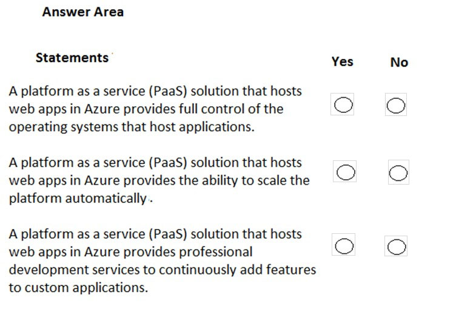
62. HOTSPOT - For each of the following statements, select Yes if the statement is true. Otherwise, select No. NOTE: Each correct selection is worth one point. Hot Area: 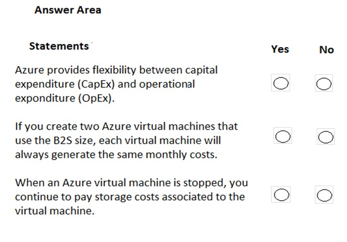
63. HOTSPOT - To complete the sentence, select the appropriate option in the answer area. Hot Area: 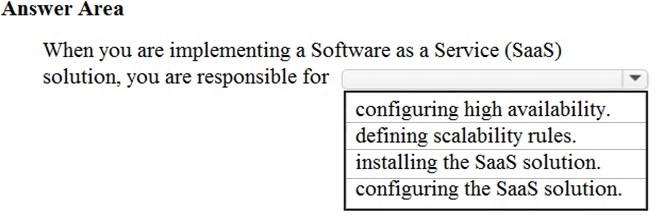
64. You have an on-premises network that contains several servers. You plan to migrate all the servers to Azure. You need to recommend a solution to ensure that some of the servers are available if a single Azure data center goes offline for an extended period. What should you include in the recommendation?
A. fault tolerance
B. elasticity
C. scalability
D. low latency
65. HOTSPOT - To complete the sentence, select the appropriate option in the answer area. Hot Area: 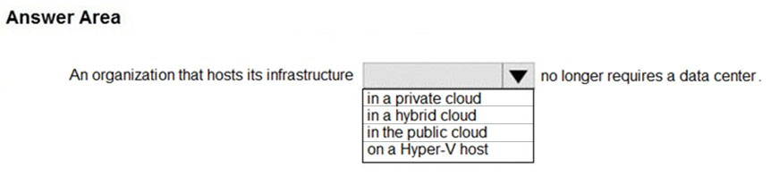
66. What are two characteristics of the public cloud? Each correct answer presents a complete solution. NOTE: Each correct selection is worth one point.
A. dedicated hardware
B. unsecured connections
C. limited storage
D. metered pricing
E. self-service management
67. HOTSPOT - To complete the sentence, select the appropriate option in the answer area. Hot Area: 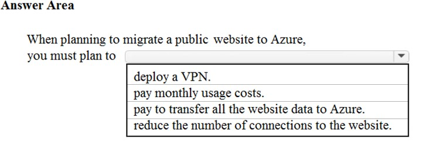
68. Note: This question is part of a series of questions that present the same scenario. Each question in the series contains a unique solution that might meet the stated goals. Some question sets might have more than one correct solution, while others might not have a correct solution. After you answer a question in this section, you will NOT be able to return to it. As a result, these questions will not appear in the review screen. Your company plans to migrate all its data and resources to Azure. The company's migration plan states that only Platform as a Service (PaaS) solutions must be used in Azure. You need to deploy an Azure environment that meets the company migration plan. Solution: You create an Azure App Service and Azure SQL databases. Does this meet the goal?
A. Yes
B. No
69. Note: This question is part of a series of questions that present the same scenario. Each question in the series contains a unique solution that might meet the stated goals. Some question sets might have more than one correct solution, while others might not have a correct solution. After you answer a question in this section, you will NOT be able to return to it. As a result, these questions will not appear in the review screen. Your company plans to migrate all its data and resources to Azure. The company's migration plan states that only Platform as a Service (PaaS) solutions must be used in Azure. You need to deploy an Azure environment that meets the company migration plan. Solution: You create an Azure App Service and Azure virtual machines that have Microsoft SQL Server installed. Does this meet the goal?
A. Yes
B. No
70. Note: This question is part of a series of questions that present the same scenario. Each question in the series contains a unique solution that might meet the stated goals. Some question sets might have more than one correct solution, while others might not have a correct solution. After you answer a question in this section, you will NOT be able to return to it. As a result, these questions will not appear in the review screen. Your company plans to migrate all its data and resources to Azure. The company's migration plan states that only Platform as a Service (PaaS) solutions must be used in Azure. You need to deploy an Azure environment that meets the company migration plan. Solution: You create an Azure App Service and Azure Storage accounts. Does this meet the goal?
A. Yes
B. No
71. Your company hosts an accounting application named App1 that is used by all the customers of the company. App1 has low usage during the first three weeks of each month and very high usage during the last week of each month. Which benefit of Azure Cloud Services supports cost management for this type of usage pattern?
A. high availability
B. high latency
C. elasticity
D. load balancing
72. You plan to migrate a web application to Azure. The web application is accessed by external users. You need to recommend a cloud deployment solution to minimize the amount of administrative effort used to manage the web application. What should you include in the recommendation?
A. Software as a Service (SaaS)
B. Platform as a Service (PaaS)
C. Infrastructure as a Service (IaaS)
D. Database as a Service (DaaS)
73. HOTSPOT - Which cloud deployment solution is used for Azure virtual machines and Azure SQL databases? To answer, select the appropriate options in the answer area. NOTE: Each correct selection is worth one point. Hot Area: 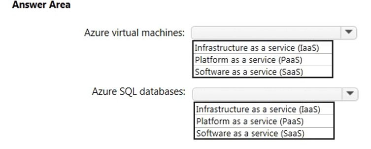
74. You have an on-premises network that contains 100 servers. You need to recommend a solution that provides additional resources to your users. The solution must minimize capital and operational expenditure costs. What should you include in the recommendation?
A. a complete migration to the public cloud
B. an additional data center
C. a private cloud
D. a hybrid cloud
75. HOTSPOT - For each of the following statements, select Yes if the statement is true. Otherwise, select No. NOTE: Each correct selection is worth one point. Hot Area: 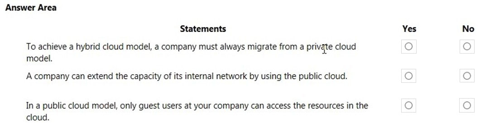
76. You plan to migrate several servers from an on-premises network to Azure. What is an advantage of using a public cloud service for the servers over an on-premises network?
A. The public cloud is owned by the public, NOT a private corporation
B. The public cloud is a crowd-sourcing solution that provides corporations with the ability to enhance the cloud
C. All public cloud resources can be freely accessed by every member of the public
D. The public cloud is a shared entity whereby multiple corporations each use a portion of the resources in the cloud
77. HOTSPOT - To complete the sentence, select the appropriate option in the answer area. Hot Area: 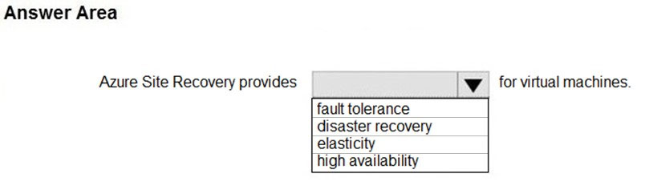
78. In which type of cloud model are all the hardware resources owned by a third-party and shared between multiple tenants?
A. private
B. hybrid
C. public
79. HOTSPOT - To complete the sentence, select the appropriate option in the answer area. Hot Area: 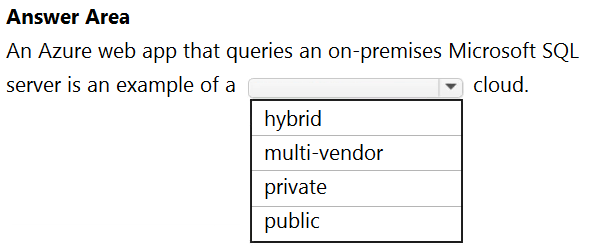
80. You have 1,000 virtual machines hosted on the Hyper-V hosts in a data center. You plan to migrate all the virtual machines to an Azure pay-as-you-go subscription. You need to identify which expenditure model to use for the planned Azure solution. Which expenditure model should you identify?
A. operational
B. elastic
C. capital
D. scalable
81. DRAG DROP - Match the Azure Cloud Services benefit to the correct description. Instructions: To answer, drag the appropriate benefit from the column on the left to its description on the right. Each benefit may be used once, more than once, or not at all. NOTE: Each correct match is worth one point. Select and Place: 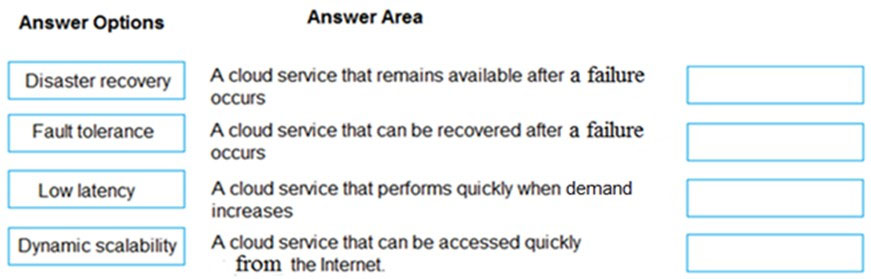
82. HOTSPOT - For each of the following statements, select Yes if the statement is true. Otherwise, select No. NOTE: Each correct selection is worth one point. Hot Area: 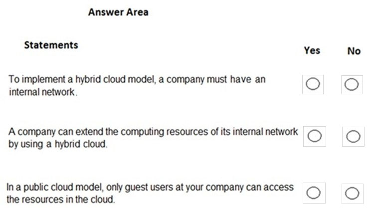
83. HOTSPOT - For each of the following statements, select Yes if the statement is true. Otherwise, select No. NOTE: Each correct selection is worth one point. Hot Area: 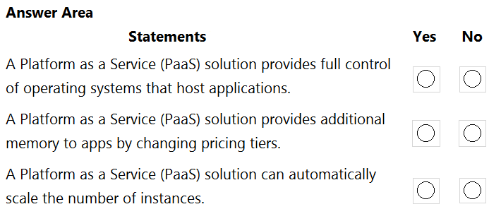
84. Your company has an on-premises network that contains multiple servers. The company plans to reduce the following administrative responsibilities of network administrators: ✑ Backing up application data ✑ Replacing failed server hardware ✑ Managing physical server security ✑ Updating server operating systems ✑ Managing permissions to shared documents The company plans to migrate several servers to Azure virtual machines. You need to identify which administrative responsibilities will be eliminated after the planned migration. Which two responsibilities should you identify? Each correct answer presents a complete solution. NOTE: Each correct selection is worth one point.
A. Replacing failed server hardware
B. Backing up application data
C. Managing physical server security
D. Updating server operating systems
E. Managing permissions to shared documents
85. HOTSPOT - For each of the following statements, select Yes if the statement is true. Otherwise, select No. NOTE: Each correct selection is worth one point. Hot Area: 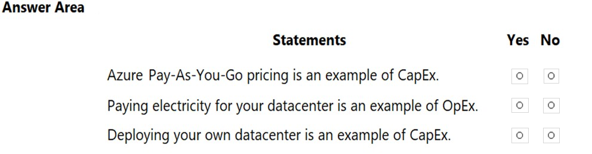
86. You plan to provision Infrastructure as a Service (IaaS) resources in Azure. Which resource is an example of IaaS?
A. an Azure web app
B. an Azure virtual machine
C. an Azure logic app
D. an Azure SQL database
87. To which cloud models can you deploy physical servers?
A. private cloud and hybrid cloud only
B. private cloud only
C. private cloud, hybrid cloud and public cloud
D. hybrid cloud only
88. DRAG DROP - Match the cloud model to the correct advantage. Instructions: To answer, drag the appropriate cloud model from the column on the left to its advantage on the right. Each cloud model may be used once, more than once, or not at all. NOTE: Each correct match is worth one point Select and Place: 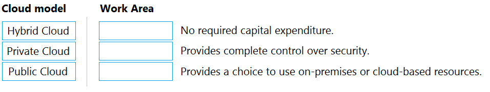
89. To which cloud models can you deploy physical servers?
A. private cloud and hybrid cloud only
B. private cloud only
C. private cloud, hybrid cloud and public cloud
D. hybrid cloud only
90. HOTSPOT - For each of the following statements, select Yes if the statement is true. Otherwise, select No. NOTE: Each correct selection is worth one point. Hot Area: 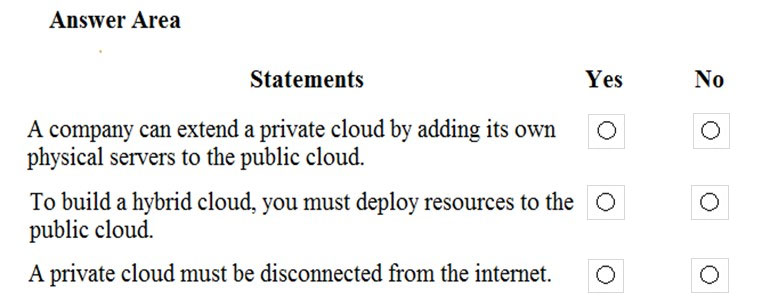
91. You have 50 virtual machines hosted on-premises and 50 virtual machines hosted in Azure. The on-premises virtual machines and the Azure virtual machines connect to each other. Which type of cloud model is this?
A. hybrid
B. private
D. public
92. HOTSPOT - For each of the following statements, select Yes if the statement is true. Otherwise, select No. NOTE: Each correct selection is worth one point. Hot Area: 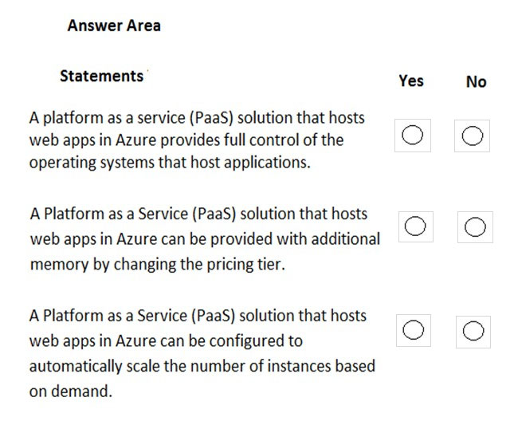
93. Note: This question is part of a series of questions that present the same scenario. Each question in the series contains a unique solution that might meet the stated goals. Some question sets might have more than one correct solution, while others might not have a correct solution. After you answer a question in this section, you will NOT be able to return to it. As a result, these questions will not appear in the review screen. Your company plans to migrate all its data and resources to Azure. The company's migration plan states that only Platform as a Service (PaaS) solutions must be used in Azure. You need to deploy an Azure environment that meets the company migration plan. Solution: You create Azure virtual machines, Azure SQL databases, and Azure Storage accounts. Does this meet the goal?
A. Yes
B. No
94. Your company plans to deploy several custom applications to Azure. The applications will provide invoicing services to the customers of the company. Each application will have several prerequisite applications and services installed. You need to recommend a cloud deployment solution for all the applications. What should you recommend?
A. Software as a Service (SaaS)
B. Platform as a Service (PaaS)
C. Infrastructure as a Service (laaS)
95. HOTSPOT - For each of the following statements, select Yes if the statement is true. Otherwise, select No. NOTE: Each correct selection is worth one point. Hot Area: 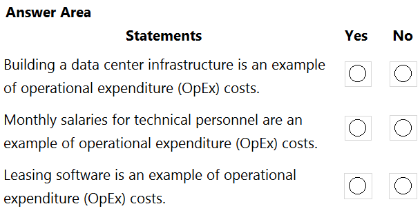
96. HOTSPOT - To complete the sentence, select the appropriate option in the answer area. Hot Area: 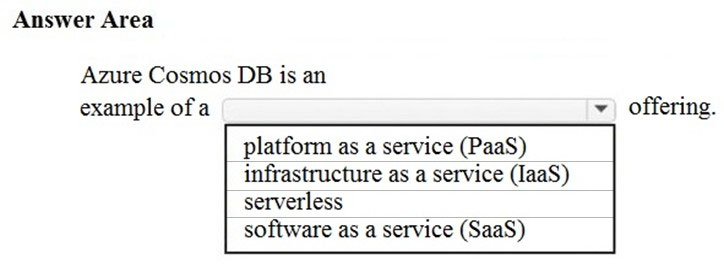
97. HOTSPOT - For each of the following statements, select Yes if the statement is true. Otherwise, select No. NOTE: Each correct selection is worth one point. Hot Area: 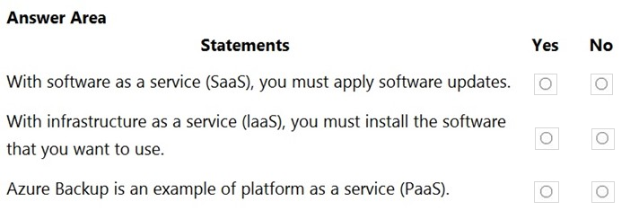
98. HOTSPOT - For each of the following statements, select Yes if the statement is true. Otherwise, select No. NOTE: Each correct selection is worth one point. Hot Area: 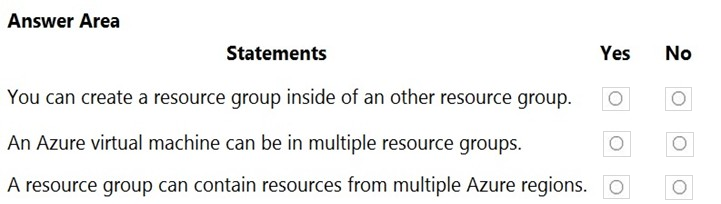
99. HOTSPOT - For each of the following statements, select Yes if the statement is true. Otherwise, select No. NOTE: Each correct selection is worth one point. Hot Area: 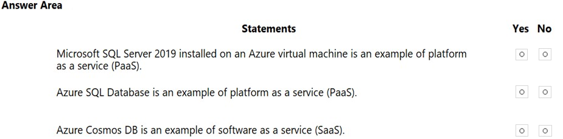
100. HOTSPOT - To complete the sentence, select the appropriate option in the answer area. Hot Area: 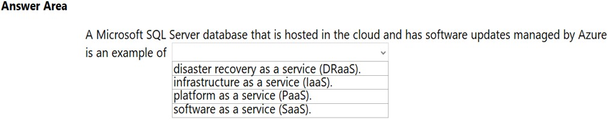